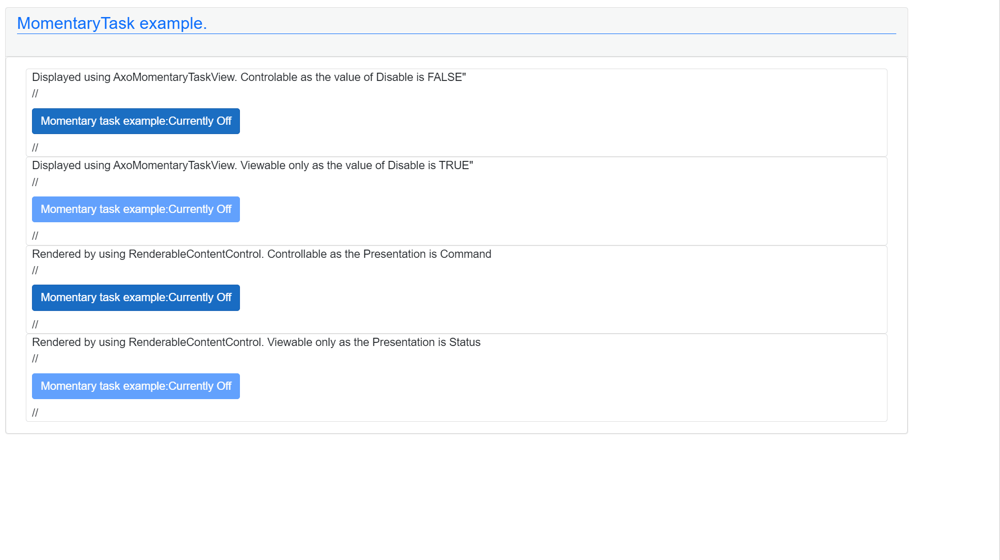

AxoMomentaryTask
AxoMomentaryTask provides basic momentary function. It is mainly designed for some manual operations from the UI side. AxoMomentaryTask needs to be initialized to set the proper AxoContext.
AxoMomentaryTask initialization within a AxoContext
CLASS AxoMomentaryTaskDocuExample EXTENDS AXOpen.Core.AxoContext
VAR PUBLIC
{#ix-set:AttributeName = "<#Momentary task example#>"}
{#ix-set:AttributeStateOnDesc = "<#Currently On#>"}
{#ix-set:AttributeStateOffDesc = "<#Currently Off#>"}
_myMomentaryTask : AxoMomentaryTask;
END_VAR
METHOD PUBLIC Initialize
// Initialization of the context needs to be called first
// It does not need to be called cyclically, just once
_myMomentaryTask.Initialize(THIS);
END_METHOD
END_CLASS
To check the state of the task there are two methods:
IsSwitchOn()- returnsTRUEif the state of the task isTRUE.IsSwitchOff()- returnsTRUEif the state of the task isFALSE.
Example of using IsSwitchOn() method:
IF _myMomentaryTask.IsSwitchedOn() THEN
; // do something
END_IF;
Example of using IsSwitchOff() method:
IF _myMomentaryTask.IsSwitchedOff() THEN
; // do something
END_IF;
Moreover, there are five more "event-like" methods that are called when a specific event occurs (see the chart below).
To implement any of the already mentioned "event-like" methods the new class that extends from the AxoMomentaryTask needs to be created. The required method with PROTECTED OVERRIDE access modifier needs to be created as well, and the custom logic needs to be placed in.
These methods are:
OnSwitchedOn()- executes once when the task changes its state fromFALSEtoTRUE.OnSwitchedOff()- executes once when the task changes its state fromTRUEtoFALSE.OnStateChanged()- executes once when the task changes its state.SwitchedOn()- executes repeatedly while the task is inTRUEstate.SwitchedOff()- executes repeatedly while the task is inFALSEstate.
Example of implementing "event-like" methods:
CLASS MyMomentaryTaskExample Extends AxoMomentaryTask
VAR
OnSwitchedOnCounter : ULINT;
OnSwitchedOffCounter : ULINT;
OnStateChangedCounter : ULINT;
SwitchOnExecutionCounter : ULINT;
SwitchOffExecutionCounter : ULINT;
END_VAR
METHOD PROTECTED OVERRIDE OnSwitchedOn
OnSwitchedOnCounter := OnSwitchedOnCounter + ULINT#1;
END_METHOD
METHOD PROTECTED OVERRIDE OnSwitchedOff
OnSwitchedOffCounter := OnSwitchedOffCounter + ULINT#1;
END_METHOD
METHOD PROTECTED OVERRIDE OnStateChanged
OnStateChangedCounter := OnStateChangedCounter + ULINT#1;
END_METHOD
METHOD PROTECTED OVERRIDE SwitchedOn
SwitchOnExecutionCounter := SwitchOnExecutionCounter + ULINT#1;
END_METHOD
METHOD PROTECTED OVERRIDE SwitchedOff
SwitchOffExecutionCounter := SwitchOffExecutionCounter + ULINT#1;
END_METHOD
END_CLASS
How to visualize AxoMomentaryTask
On the UI side there are several possibilities how to visualize the AxoMomentaryTask.
You use the AxoMomentaryTaskView and set its Component according the placement of the instance of the AxoMomentaryTask.
Based on the value of Disable the control element could be controllable:
<AxoMomentaryTaskView Component="@Entry.Plc.AxoMomentaryTaskDocu._myMomentaryTask" Disable="false" />
or display only:
<AxoMomentaryTaskView Component="@Entry.Plc.AxoMomentaryTaskDocu._myMomentaryTask" Disable="true" />
The next possibility is to use the RenderableContentControl and set its Context according the placement of the instance of the AxoMomentaryTask.
Again as before the element could be controlable when the value of the Presentation is Command:
<RenderableContentControl Context="@Entry.Plc.AxoMomentaryTaskDocu._myMomentaryTask" Presentation="Command" />
or display only when the value of the Presentation is Status
<RenderableContentControl Context="@Entry.Plc.AxoMomentaryTaskDocu._myMomentaryTask" Presentation="Status" />
The displayed result should looks like:
